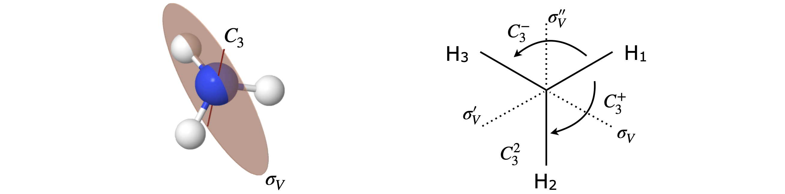
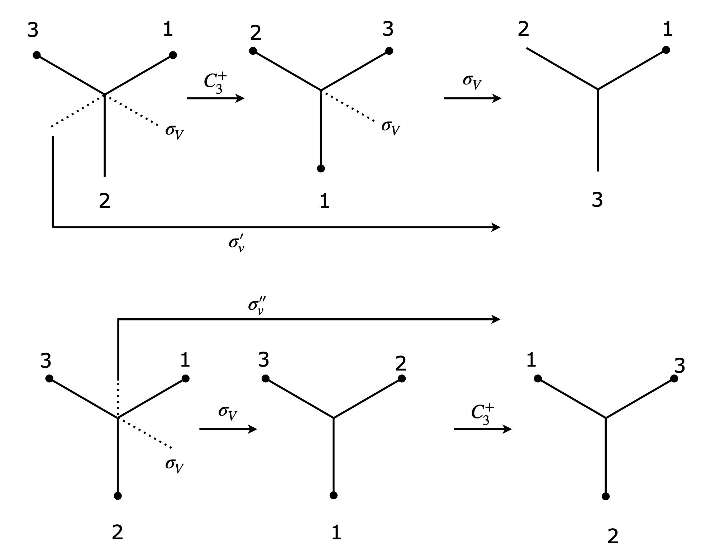
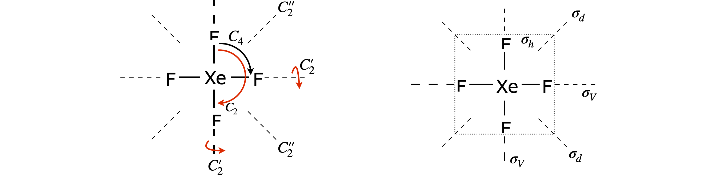
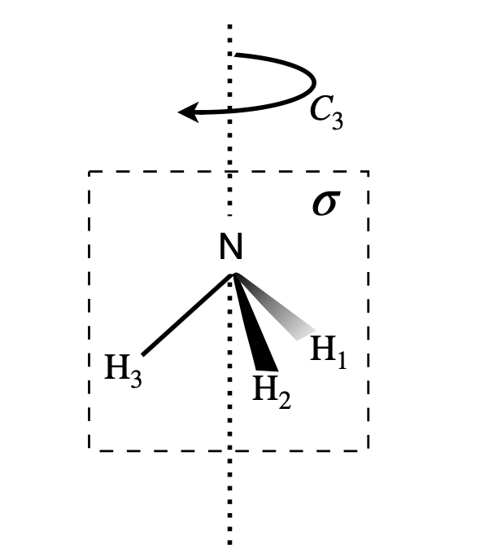
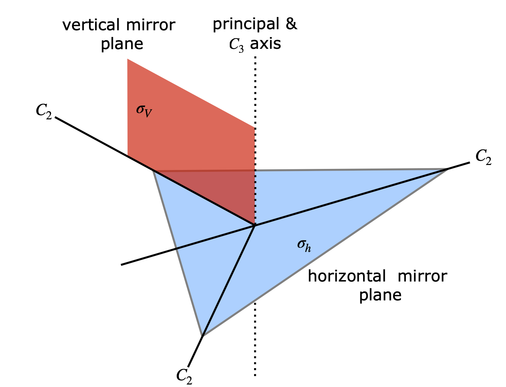
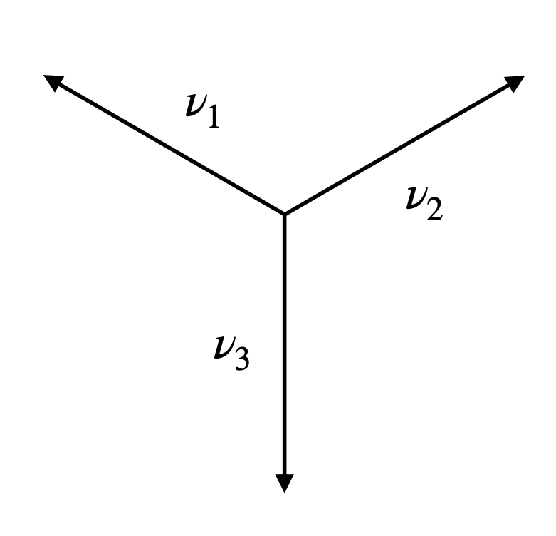
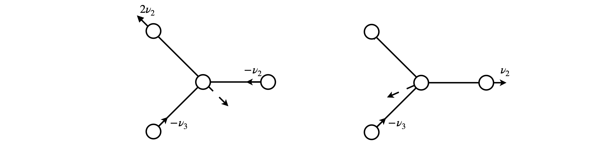

Solutions Q17 - 30
Contents
Solutions Q17 - 30#
# import all python add-ons etc that will be needed later on
%matplotlib inline
import numpy as np
import matplotlib.pyplot as plt
from sympy import *
init_printing() # allows printing of SymPy results in typeset maths format
plt.rcParams.update({'font.size': 14}) # set font size for plots
Q17 answer#
The nitrogen in ammonia is sp\(^3\) hybridized with a lone pair of electrons taking up the fourth position; if there were a proton on this position making NH\(_4^+\) the point group would be tetrahedral. Two views of ammonia are shown in Fig. 7.78. In the left figure the third mirror plane is in line with the axis and not visible behind the other two.
From the right-hand view it is clear that the molecule has a threefold axis, the molecule can be rotated by \(120^\text{o}\), a \(C_3^+\) operation, or by \(-120^\text{o}\) a \(C_3^-\) operation, to become indistinguishable. There is no horizontal mirror plane or \(C_2\) axes, but there are three vertical mirror planes.
To form the product table, products \(C_3^+ \otimes C_3^-\) and \(C_3 \otimes \sigma_V\) etc. have to be evaluated this way as well as the other way round. There are two ways at least of doing this; one is geometric, the other algebraic and is to define a basis set and to work out the matrix for each operation and then to multiply them together. To use the geometrical method the H atoms have to be labelled so that they can be distinguished as shown in figure 78.

Figure 78 \(C_{3V}\) geometry. The \(C_3\) axis is also the principal axis.
The effect of \(C_3^+ \otimes C_3^-\) is first to move atom H\(_1\) by one place (\(120^\text{o}\)) to H\(_2\) then to move it back, therefore making the molecule identical \(E\); as an equation \(C_3^+ \otimes C_3^- = E\). The reversed multiplication order produces the same result. In two consecutive \(C_3\) operations, the first moves H\(_1\) by one place and the second does the same producing a total rotation of \(240^\text{o}\) or \(C_3^+ \otimes C_3^+ =C_3^-\). Now consider a rotation and reflection; \(C_3^+ \otimes \sigma_V\). The rotation moves H\(_1\) to H\(_2\) and H\(_3\) to to H\(_1\); reflection now exchanges the H\(_3\) and H\(_1\) atoms and the effect is the same as a \(\sigma_V'\) reflection: \(C_3^+ \otimes \sigma_V = \sigma_V'\). The reverse product is \(\sigma_V \otimes C_3^+ = \sigma_V''\) showing that these two operations do not commute; Figure 79.

Figure 79 Top: \(C_3^+ \otimes \sigma_V = \sigma_V'\) and bottom \(\sigma_V \otimes C_3^+ = \sigma_V''\) showing that these operations do not commute.
The complete table is shown below.
Q18 answer#
Making a sketch of ammonia, the bonds can be labelled \(a, b, c\) to represent vectors along them. A \(C_3^+\) rotation has the effect \(abc \to cab\) which as a matrix equation is
Other matrices are
A simple way to check the table is to use Sympy to multiply out the matrices and then check the product. The product always has to be member of the group so it is only necessary to check which one this is via a look up table of names.
# Algorithm Matrix Products
E, C3p, C3m, sigV, sigVd, sigVdd = symbols('E, C3p, C3m, sigV, sigVd, sigVdd' )
E = Matrix([[1,0,0],[0,1,0],[0,0,1]])
C3p = Matrix([[0,0,1],[1,0,0],[0,1,0]]) # C3 plus
C3m = Matrix([[0,1,0],[0,0,1],[1,0,0]]) # C3 minus
sigV = Matrix([[0,1,0],[1,0,0],[0,0,1]])
sigVd = Matrix([[1,0,0],[0,0,1],[0,1,0]]) # sigma V'
sigVdd= Matrix([[0,0,1],[0,1,0],[1,0,0]])
alist = [ E, C3p, C3m, sigV, sigVd, sigVdd ]
n = len(alist)
nlist=['E', 'C3p', 'C3m','sigV',"sig_V'","sigV'' "]
print('{:12s}'.format(' '),end='')
print(*('{:6s}'.format(k) for i,k in enumerate(nlist)) )
print('----------------------------------------------------------\n')
for i in range(n):
print('{:8s} |'.format(nlist[i]),end='')
for j in range(n):
prod = alist[i]*alist[j]
print(' {:6s}'.format( nlist[alist.index(prod) ] ) ,end='' ) # find index of match
print('\n')
E C3p C3m sigV sig_V' sigV''
----------------------------------------------------------
E | E C3p C3m sigV sig_V' sigV''
C3p | C3p C3m E sigV'' sigV sig_V'
C3m | C3m E C3p sig_V' sigV'' sigV
sigV | sigV sig_V' sigV'' E C3p C3m
sig_V' | sig_V' sigV'' sigV C3m E C3p
sigV'' | sigV'' sigV sig_V' C3p C3m E
Q19 answer#
Multiplying gives
and \(BB\) can only be \(E\) or \(C\). Suppose that \(BB = E\) then the table is
with \(BC = C\), which is not correct no matter what \(CC\) is because \(C\) appears twice in the bottom row and last column. Trying \(BB = C\) produces the correct table.
Q20 answer#
Using the matrices from the previous question the products are
A1 = C3m.inv()* sigV*C3m
A1
A2 = C3p.inv()*sigV*C3p
A2
Looking at the matrices it follows that \(A_1 = \sigma_V'\) and \(A_2 = \sigma_V''\) or \(\sigma_V' = \sigma_V^{-1}C_3^-\sigma_V\) and \(\sigma_V'' = \sigma_V^{-1}C_3^+\sigma_V\).
Q21 answer#
The highest symmetry axis, the principal axis,is a \(90^\text{o}\) rotation axis about the Xe atom, labelled \(C_4\), and is perpendicular to the plane of the molecule. There is also a \(C_2\) axis, a \(180^\text{o}\) rotation about the same axis. The molecule has a centre of inversion.
There is a \(C_2\) axis through each diagonal along the F-Xe-F bonds of the square and similarly bisecting adjacent F atoms. There is a horizontal mirror plane in the plane of the molecule; horizontal because it is perpendicular to the principal axis. This immediately suggests a \(D\) point group. There are dihedral mirror planes bisecting adjacent F atoms as well as vertical mirror planes along the F-Xe-F atoms.
The Xe atom is at the centre of inversion. (An inversion centre is present if any position on one side of an object can be passed through a single point in the object to an equivalent position on the other side.) Finally, there are two \(90^\text{o}\) rotation reflection operations labelled \(S_4\). The fourfold rotation axis, the horizontal mirror plane and the inversion centre are sufficient to identify \(D_{4h}\) as the point group.

Figure 80. XeF\(_4\) and some of its rotation and reflection symmetry elements.
Q22 answer#
Looking at figure 11 the reflection in the mirror plane labelled \(\sigma_V'\) leaves the atoms unchanged. The symbolic equation is therefore,
As the atoms are unchanged, the matrix should be a unit matrix,
The reflection in the other plane \(\sigma_V\) swaps atoms \(a\) and \(b\) therefore the generic equation is
which has the same effect as a \(C_2\) rotation so that the matrix is
Q23 answer#
(a) The rotation equation is
following this by a reflection \(\sigma_V'\) the equation is
which shows that these two operations have had the same effect as reflection \(\sigma_V\) because the unit diagonal matrix, \(\sigma_V'\) is the same as the identity matrix and changes nothing:
so the two operations are equivalent to a reflection \([\sigma_V'][C_2]=[\sigma_V]\)
Reversing the order of operations changes nothing in this case because \([\sigma_V]\) is a unit diagonal matrix so that \([C_2][\sigma_V']=[\sigma_V]\)
(b) The fact that \([\sigma'][C_2]=[\sigma]\) and \([C_2][\sigma']=[\sigma]\) means that \([C_2,\sigma']=0\) and therefore these two commute.
Q24 answer#
The carbon atoms are on the principal axis so remain unchanged by any operation. The \(C_2\) operation swaps \(H_a\) with \(H)b\) and \(F_a\) with \(F_b\) and leaves the two carbon atoms unchanged. The symbolic matrix is
and following the previous examples we can try
To check the calculation with Sympy, the matrix is formed containing only zeros and then the six non-zero elements are then added.
C2, M, Ha, Hb, C, Fa, Fb = symbols('C2, M, Ha, Hb, C, Fa, Fb')
C2 = zeros(6,6)
C2[0,1] = 1
C2[1,0] = 1
C2[2,2] = 1
C2[3,3] = 1
C2[4,5] = 1
C2[5,4] = 1
C2
M = Matrix([Ha, Hb, C, C, Fa, Fb] )
C2*M
If the ordering in the basis set is changed, say to \([Fb,C,Ha,C,Fa,Hb]\) and provided the matrix is similarly changed then the same result is obtained.
Q25 answer#
The structure is shown below; the principal axis passes through the N atoms and equally distant from each of the H atoms.

Figure 81. Ammonia with \(+120^\text{o}\) rotation about the principal axis; H atoms \(1\to 2,2\to 3,3\to 1\) and one of three vertical mirror planes \(\sigma\). In this plan H atom \(3\) is unchanged, but \(1\to 2\) and \(2\to 1\).
Rotation by \(120^\text{o}\) makes the molecule indistinguishable from its original shape. There are two rotation operations; clockwise rotation by \(120^\text{o}\) (\(C_3\)), and by \(240^\text{o}\), which is the same as two rotations of \(120^\text{o}\) (\(C_3^2\)), or one rotation anticlockwise. Each leaves the molecule indistinguishable. Rotation by \(+120^\text{o}\) about the principal axis leaves the N atom alone and swaps the H atoms about in the order \(a \to b,\;b \to c\) and \(c \to a\). The matrix equation is
The matrix to do this is \(\displaystyle C_3=\begin{bmatrix} 1 & 0 & 0 &0 \\ 0 & 0 & 1 & 0 \\ 0 & 0 & 0 & 1 \\ 0& 1 & 0 & 0\\ \end{bmatrix}\) which can be confirmed by multiplying it out.
The matrix for the reflection shown above is simpler as only the H atoms change place \(\displaystyle \sigma_V=\begin{bmatrix} 1 & 0 & 0 &0 \\ 0 & 0 & 1 & 0 \\ 0 & 1 & 0 & 0 \\ 0& 0 & 0 & 1\\ \end{bmatrix}\).
Q26 answer#
(a) Rotation about the principal axis is by \(2\pi/n\) for a \(C_n\) axis then the matrix is (see text)
Reflection in an axis perpendicular to the principal or z-axis inverts the \(z\) coordinates and leaves \(x\) and \(y\) unchanged. The matrix is therefore \(\displaystyle \begin{bmatrix} 1 & 0 & 0 \\ 0 & 1 & 0 \\ 0 & 0 & -1 \end{bmatrix}\) and multiplying these forms the combined operation giving
(b) The trace is \(T_{S_n}=2\cos(2\pi/n)-1\)
Q27 answer#
(a) The principal axis is taken as the axis of highest symmetry, which is the threefold axis through the centre and perpendicular to the plane of the molecule. The plane of the molecule is therefore a horizontal mirror plane and there are three, twofold axes perpendicular to the principal axis as well as three vertical mirror planes. These elements are shown in the figure. Only one of the three vertical planes is shown for clarity.

Figure 82. Symmetry elements in a planar molecule belonging to the \(D_{3h}\) point group.
(b) Considering just the three p orbitals produces \(C_3\) symmetry. The horizontal mirror plane and the \(C_2\) axes perpendicular to the principal axis are lost from \(D_{3h}\) because of the phase of the orbitals.
Operating on the orbitals with the C operators moves the location of each orbital so according to the rules these count zero. The \(C_3^2\) operation moves the orbital twice by \(120^\text{o}\) or once by \(-120^\text{o}\) from its initial position. The identity counts three therefore the reducible representation is
Using the tabular method this is reduced as
which means that the orbitals contain the \(A\) and \(E\) symmetry species. The normalized molecular orbitals are therefore constructed using the point group character table
which contain complex numbers this is, however, not a problem. Note that any measurement involves an expectation value of the form \(\langle A \rangle = \int \varphi^* A \varphi d\tau\) if the operator is \(A\) and because of the complex conjugate the result is always a real number. However, to avoid having a complex number in the wavefunction a linear combination can be made such as \(\varphi_{E_1} +\varphi_{E_2}\) and \(i(\varphi_{E_1} -\varphi_{E_2})\) both of which will be real. The identity \(e^{i\theta}+e^{-i\theta}=2\) and \(e^{i\theta}-e^{-i\theta}=2i\sin(\theta)\) can be used. As the angle is \(\theta = 120\) the orbitals become
which can easily be visualised.
Q28 answer#
(a) The point group is \(C_{2V}\). The mirror plane of the carbon atoms is lost because the orbital are \(\pm\) or black/white above and below this plane. The principal and z-axis is perpendicular to the plane of the carbons.
(b) There are ten orbitals in the basis set;therefore,the character of \(E = 10\). On rotation about the principal axis all the atoms are moved so the character of \(C_2 = 0\). On reflection about the \(x\) axis (carbons 9/10) eight orbitals are changed each of which counts zero and two are unchanged making the character of \(\sigma(xz) = 2\). The other reflection plane swaps all atoms so counts zero. The reducible representation is therefore
The reduced representation contains still contains ten orbitals but organized as \(3A_1 + 2A_2 + 3B_1 + 2B_2\)symmetry species.
Q29 answer#
Imagine vectors representing p orbitals with different phase above and below the plane of the molecule. Operate on these to form the reduced representation. (Recall that atoms moved count \(0\), atoms unchanged \(1\) and inverted \(-1\).)
The number of operations is \(h = 8\) and the reduction table is shown below with columns that are zero deleted.
The reduced representation therefore contains \(3B_{1g} + 2B_{2g} + 2A_u + 3B_{3u}\) which are \(10\) in total, the same as the number of orbitals.
Choosing atom 1 as victim, the \(L_M\) formula Section 6.16 produces the following table. The row for the totally symmetric species \(A_g\) shows that the sum is zero, no \(A_g\) species is present in the reduced representation. Three rows are included for \(B_{1g}\), starting with orbitals on atoms 1, 2, and 9. The remaining rows for \(B_{2g}\) and \(B_{3u}\) are missing and are left for you to work out. Note that if the \(C_{2V}\) point group was used instead then the same results would have been obtained, and with less effort, showing that the \(\pi\) orbital symmetry really is important.
The degenerate symmetry species can form linear combinations with one another if they are normalized and orthogonal. If not orthogonal, they can be made so using the Gram - Schmidt method. The energy can be found by calculating the expectation values \(\langle \psi_a|H|\psi_a\rangle,\; \langle \psi_a|H|\psi_b\rangle;\;\langle \psi_a|H|\psi_c\rangle;\) , etc. where \(\psi_{a,b,c}\) are different symmetry adapted orbitals, for example the three normalized and orthogonal \(B_{1g}\) orbitals are \(\psi_a =(v_2 -v_3 -v_6 +v_7 )/2,\; \psi_b =(v_1 -v_4 -v_5 +v_8)/2 \) and \(\psi_c =(v_9 -v_{10} )/\sqrt{2}\).
The calculation is shown below. Note that a vector such as \(v_2-v_3+v_6-v_7\) when used in a programme has to be written with each term with a separate index in a 1D matrix or list, i.e. as \([v_2,-v_3,+v_6,-v_7]\). As each \(v\) vector is real and has unit length then \({v^*\cdot v}=v^2=1\) and this simplifies the normalisation terms.
v1,v2,v3,v4,v5,v6,v7,v8,v9,v10 = symbols('v1,v2,v3,v4,v5,v6,v7,v8,v9,v10',positive=True)
psi1 = Matrix([2*v1,0,0,2*v4,-2*v5,0,0,+2*v8,0,0]) # each length 10
psi2 = Matrix([0,2*v2,-2*v3,0,0,-2*v6,+2*v7,0,0,0])
psi3 = Matrix([0,0,0,0,0,0,0,0,4*v9,-4*v10])
GramSchmidt([psi1,psi2,psi3],True) # orthogonalise and normalise
The expectation values are the product of the terms including the wavefunctions. Remember that these are really ten elements long with the coefficients for the missing ts set to zero. If a wavefunction is written as
where in this example \(n=10\). The for \(\psi_a\) coefficients \(a\) are \(0, 1/2, -1/2, 0, 0, -1/2, 1/2, 0, 0, 0\). The expectation is the double summation
where \(b\) are the coefficients of the other wavefunction. If the Hamiltonian is of the Huckel type, where interaction is only with adjacent orbitals and zero otherwise, the the bra-ket \(\langle v_k|H|v_j\rangle=0\) or \(1\) depending upon whether the atoms are adjacent or not.
The nine energies (for three degenerate wavefunctions) are placed into a \(3 \times 3\) matrix and the eigenvalues found. The same procedure is followed for the other symmetry orbitals. This makes the calculation far smaller by than calculating a \(10 \times 10\) matrix. The eigenvalues for the \(A_u\) species are \((\pm 5 - 1)/2\).
Q30 answer#
The reducible representation is A1′+E′ and is worked out using the vectors in the diagram. This accounts for three of the normal modes. The other three are the in-plane and out-of-plane bending modes.

Figure 83. Vectors for in-plane stretches in BF\(_3\).
By the method of Section 6.13 the reducible representation is found to be
Using the tabular method, this works out as
Choosing vector \(v_1\) as victim, the projection operator method, Section 6.15, produces the following results but only when the full table is used. The classes of operators \(2C_3\) etc. have to be expanded so that each is included separately. The (1), (2), and (3) refer to the axes along which the vectors are drawn; the superscripts \(\pm\) to rotation clockwise or anticlockwise by \(120^\text{o}\).
The top row produces the mode pattern for the totally symmetric vibration which is \(v_1 + v_2 + v_3\) and shows that in this normal mode each bond stretches together, much as the vectors in the sketch. The normalized vector is \((v_1 + v_2 + v_3)/\sqrt{3}\). The vectors for the doubly degenerate mode,\(2v_1 -v_2 -v_3\) and \(-v_1 +2v_2 -v_3\) are calculated by taking vector 1 then 2 but the results are not orthogonal. To check this form, the dot product which is \([2 -1 -1] [-1 2 -1]^T = -3\). Using Sympy these can be made orthogonal, they do not need to be normalized to do this, but the ‘True’ in the GramSchmidt command normalises the vectors.
e1, e2 = symbols('e1, e2')
e1 = Matrix([2,-1,-1])
e2 = Matrix([-1,2,-1])
GramSchmidt([e1,e2],True)
The resulting orthogonal and normalised vectors are \((2v_1-v_2-v-3)\sqrt{6}\) and \((v_2-v_3)\sqrt{2}\), see figure 84.
The symmetry method used with just three vectors does not allow for any translational motion of the B atom and this is essential to ensure that the centre of gravity does not move. The B atom moves in such a way as to preserve the symmetry. This motion can be imagined as shown by the dashed line in the sketch when the components of the other vectors are scaled for their differences in mass and then added together.

Figure 84 Doubly degenerate, vibrational symmetry species. The solid lines show the motion of the F atoms the dashed line that estimated for the B atom to keep the centre of gravity fixed. Neither is to scale. The typical bond displacement of the \(v = 0\) level of a vibration is \(1\) to \(5\)% of the bond length, hardly large enough to show on the diagram.